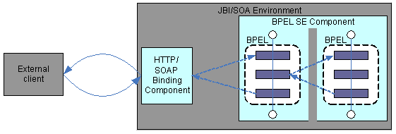
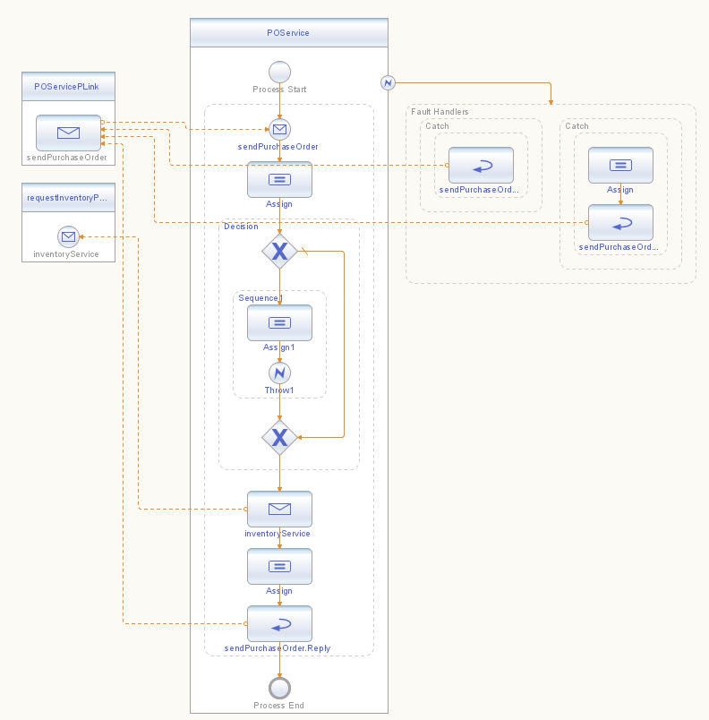
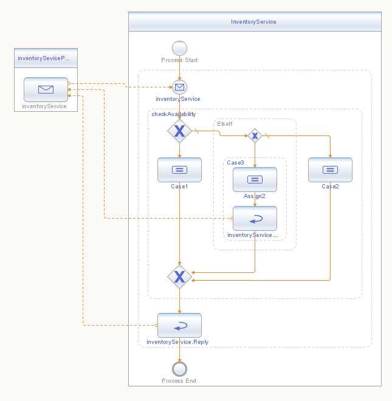

Kiran Bhumana, Ryan Kennedy, Shauna Pickett-Gordon
Built-in support for error handling has evolved into a key feature of many programming languages. Before the advent of error-handling constructs, developers had to manually provide the framework to ensure proper execution in error situations. Now, error-handling constructs are available to support the following patterns:
Modern programming languages, including the Business Process Execution Language (BPEL), provide high-level constructs that enable error-handling patterns to be programmed easily and with minimal risk.
Since BPEL is a WSDL-based specification, it refers to these concepts as fault handling. Fault handling in BPEL provides semantics for catching various types of faults, propagating faults, and nesting fault-handling operations.
This document explains some design aspects and usage patterns of BPEL fault handling. It does not attempt an exhaustive list of fault-handling features, but focuses on the most common usage patterns.
While a BPEL process is running, it can encounter faults from partner services that are invoked or faults that originate from within the BPEL process itself. Faults that are due to partner service invocations are typically defined on the WSDL operation, whereas faults that originate from within the process are BPEL-defined standard faults and are identified in certain error situations.
BPEL defines a faultHandler construct that contains catch
or catchAll constructs to enable the handling of a fault.
A faultHandler's catch construct defines
certain criteria for catching a fault, and the catch executes
when a fault is thrown and meets those criteria. The faultHandler's
catchAll construct handles any occurrence of a fault. In
the example provided in this BluePrint's design
details, a defined faultHandler executes a reply
activity notifying the client that an item is out of stock.
A BPEL developer can isolate sets of related activities within a
business process by placing them in a scope element.
Using scope
lets the developer control a fault's effect and any consequent action
or compensation. The design also isolates other areas of business
process execution, and enables better event handling and compensatory
actions.
BPEL provides the faultHandler construct at three
levels:
scope, in short scope-level
fault handlers invoke
activity Scopes not only isolate fault handling, but also provide a nesting
capability, which suggests that associated fault handlers can form a
similar nested hierarchy. A nested faultHandler that
can't handle a particular fault delegates fault handling to the
enclosing faultHandler, until it reaches the faultHandler
at the process level. At that level, either the fault is handled or the
instance is terminated. The throw and rethrow
constructs are
defined to explicitly cause a fault to happen and propagate throughout
the fault-handling chain. A nested faultHandler can rethrow
a fault so that its enclosed scope has the opportunity to handle it. faultHandler
that are associated with a scope are also used to undo partially
completed work within the scope.
The example shown here uses the
services discussed in the first BluePrint of this
series, Synchronous
Web Service Interactions Using BPEL, with added
emphasis on fault handling.
The following figure describes the synchronous interaction pattern between the services.

Figure
1: Stateless and Synchronous Service Implementation
In this scenario, the following fault handling patterns are demonstrated:
To achieve those fault handling patterns, the following BPEL constructs are used:
faultHandlers at the process level
throw, with a fault name and a fault message
catch, with a fault name parameter specified See the first
BluePrint in this series for the essential business logic of the
services that are used in this example.
This particular example demonstrates two kinds of faults: a
fault
that is explicitly thrown in POService,
and a fault that could happen due to the consumption of
InventoryService.
throw
construct in order to throw a fault explicitly within a
BPEL process.In this example, POService
has been modified to check if the incoming purchase order's orderDescription
value starts with ThrowPOServiceFault.
If so, POService uses
the
to throw a fault that is to be handled by the
process-level
faultHandlers.throw
construct
<if name="Decision">
<condition>starts-with($purchaseOrderRequest.purchaseOrder/orderDescription,
'ThrowPOServiceFault')
</condition>
<sequence name="Sequence1">
<assign name="Assign1">
<copy>
<from>'throwing purchase order fault'</from>
<to
part="faultInfo" variable="purchaseOrderFault"/>
</copy>
</assign>
<throw name="Throw"
faultName="pos:cannotCompleteOrder"
faultVariable="purchaseOrderFault"/>
</sequence>
</if>
faultHandlers
are
used in much the same way as
try/catch blocks found in modern programming languages.
Within the faultHandlers,
one or more catch
activities are
defined
allowing you to handle different faults that may occur within the
business process.
In
this scenario, POService contains
a
process-level fault handler with a catch
activity to
handle the pos:cannotCompleteOrder fault.
Here, the
catch clause
is
defined so that the faults are
handled
by the fault name.
<faultHandlers>
<catch
faultName="pos:cannotCompleteOrder">
<sequence>
<reply name="sendPurchaseOrder.Fault"
partnerLink="POServicePLink"
portType="pos:purchaseOrderPT"
operation="sendPurchaseOrder"
variable="purchaseOrderFault"
faultName="pos:cannotCompleteOrder"/>
</sequence>
</catch>
...
</faultHandlers>
Fault Thrown Due to the Consumption of
Partner Service
The inventory service provider has business logic to check the
availability of an item. In this BluePrint, additional behavior has
been defined so that InventoryService can return a
WSDL-defined fault when a requested item is not available in inventory.
Within
InventoryService, if the incoming purchase order's
orderDescription value starts with ThrowInventoryFault,
a reply
activity is used to return a fault message to the consumer of the
service, POService.
<if
name="checkAvailability">
<condition>starts-with($purchaseOrder.purchaseOrder/orderDescription,
'OrderVal')</condition>
<assign name="Case1">
<copy>
<from>true()</from>
<to>$inventoryStatus.inventoryPart/inventoryStatus</to>
</copy>
<copy>
<from>'available'</from>
<to>$inventoryStatus.inventoryPart/inventoryStatusMessage</to>
</copy>
</assign>
<elseif>
<condition>starts-with($purchaseOrder.purchaseOrder/orderDescription,
'ThrowInventoryFault')</condition>
<sequence name="Case3">
<assign name="Assign2">
<copy>
<from>concat('Inventory Fault thrown for PurchaseOrder ID ',
$purchaseOrder.purchaseOrder/orderId, ' customer ID ',
$purchaseOrder.purchaseOrder/customerId)</from>
<to
part="faultInfo" variable="inventoryService_Fault"/>
</copy>
</assign>
<reply name="inventoryService.Reply_1"
partnerLink="inventorySevicePLink"
portType="invs:inventoryPortType"
operation="inventoryService"
variable="inventoryService_Fault"
faultName="invs:inventoryFaultType"/>
</sequence>
</elseif>
<else>
<assign name="Case2">
<copy>
<from>false()</from>
<to>$inventoryStatus.inventoryPart/inventoryStatus</to>
</copy>
<copy>
<from>'currently out of
stock'</from>
<to>$inventoryStatus.inventoryPart/inventoryStatusMessage</to>
</copy>
</assign>
</else>
</if>
A invs:inventoryFaultType fault
is then caught in a
second catch activity defined within the POService fault
handler. This particular fault is handled
at the process level and causes POService to
return a WSDL-defined fault to its consumer.
<faultHandlers>
...
<catch faultName="invs:inventoryFaultType"
faultVariable="inventoryServiceFault"
faultMessageType="invs:inventoryFault">
<sequence>
<assign name="Assign1_1">
<copy>
<from variable="inventoryServiceFault"
part="faultInfo"/>
<to variable="purchaseOrderFault"
part="faultInfo"/>
</copy>
</assign>
<reply name="sendPurchaseOrder.Fault"
partnerLink="POServicePLink"
portType="pos:purchaseOrderPT"
operation="sendPurchaseOrder"
variable="purchaseOrderFault"
faultName="pos:cannotCompleteOrder"/>
</sequence>
</catch>
...
</faultHandlers>
Since the fault handling is at the
process level, the BPEL process
instance is terminated after the fault is handled.
The following diagram illustrates how a process-level fault handler
is
used in the POService BPEL process.

Figure
2: POService BPEL Process
The next diagram shows the corresponding fault-handling
activities in the InventoryService BPEL process.

Figure
3: InventoryService BPEL Process
See the first BluePrint in this series for further details on the BPEL artifacts used in each process.
The following POService WSDL operation defines a
fault named cannotCompleteOrder:
<portType name="purchaseOrderPT">
<operation name="sendPurchaseOrder">
<input name="sendPurchaseOrderRequest" message="tns:POMessage"></input>
<output name="sendPurchaseOrderReply" message="tns:POMessage"></output>
<fault name="cannotCompleteOrder" message="tns:orderFaultType"></fault>
</operation>
</portType>
The InventoryService WSDL operation also defines a
fault named inventoryFaultType:
<portType name="inventoryPortType">
<operation name="inventoryService">
<input name="purchaseOrder" message="tns:POMessage"></input>
<output name="inventoryStatus" message="tns:InventoryMessage"></output>
<fault name="inventoryFaultType" message="tns:inventoryFault"></fault>
</operation>
</portType>
See the first BluePrint in this series for further details on these WSDL artifacts.
Also consider the following when you are designing fault handling into your BPEL processes.
Various ways of handling faults.
In this particular scenario, the catch section of a fault
handler handles a fault by only the fault name. Refer to the BPEL
specification for other ways of handling faults.
Scope in fault handling. In this particular design, scopes could have been defined around the regions where fault handling is necessary. This would be beneficial if a lot of fault handling code were needed, and if fault handling code were not required to be shared.
Invoke-related fault handling.
An inlined or embedded fault handler can be defined for invoke,
which would handle faults related to that invoke. This
would target the fault-handling code over the areas where the fault
occurs. The advantage is that all the necessary fault handling is
handled where it is expected to occur. However, invoke
related
fault handling isn't the ideal approach if fault handling code needs to
be shared or must be duplicated.
Localized usage of fault handling.
Fault handling at the scope or invoke level lets the
developer take appropriate compensatory action based on the fault. This
pattern is more applicable to a BPEL process, which is an orchestration
of many services that might still need to continue despite the
occurrence of a fault in one area.
Trade-offs in level-specific design. Fault handling must be designed appropriately at the level of process, scope, or invoke activity level. Consider the pros and cons of isolation, compensation, and sharing of the fault handling code.
Use of reply to send faults.
A reply activity can be used to send a WSDL-defined fault
to the
consumer of the service. A faultName attribute on the reply
activity gives a clue to the faultType.
The following input XML instance gives a valid response.
<soapenv:Envelope xmlns:soapenv="http://schemas.xmlsoap.org/soap/envelope/"
xmlns="http://manufacturing.org/xsd/purchase"
xmlns:xsi="http://www.w3.org/2001/XMLSchema-instance"
xsi:schemaLocation="http://schemas.xmlsoap.org/soap/envelope/ http://schemas.xmlsoap.org/soap/envelope/">
<soapenv:Body>
<sendPurchaseOrder>
<purchaseOrder>
<purchaseOrder xmlns="http://manufacturing.org/xsd/purchase">
<orderId>00012343</orderId>
<customerId>9876</customerId>
<orderDescription>OrderVal_Any_Description</orderDescription>
<price></price>
</purchaseOrder>
</purchaseOrder>
</sendPurchaseOrder>
</soapenv:Body>
</soapenv:Envelope>
The next input XML instance causes a cannotCompleteOrder
fault to be thrown to the client. The fault is due to the execution
of a throw activity within the POService
BPEL process.
<soapenv:Envelope xmlns="http://manufacturing.org/xsd/purchase"
xmlns:soapenv="http://schemas.xmlsoap.org/soap/envelope/"
xmlns:xsi="http://www.w3.org/2001/XMLSchema-instance"
xsi:schemaLocation="http://schemas.xmlsoap.org/soap/envelope/ http://schemas.xmlsoap.org/soap/envelope/">
<soapenv:Body>
<sendPurchaseOrder>
<purchaseOrder>
<purchaseOrder xmlns="http://manufacturing.org/xsd/purchase">
<orderId>00012342</orderId>
<customerId>9876</customerId>
<orderDescription>ThrowPOServiceFault_Val_Any_Description</orderDescription>
<price></price>
</purchaseOrder>
</purchaseOrder>
</sendPurchaseOrder>
</soapenv:Body>
</soapenv:Envelope>
The following input XML instance causes a cannotCompleteOrder
fault to be thrown to the client. This fault is due to a fault sent
by the inventory service.
<soapenv:Envelope xmlns="http://manufacturing.org/xsd/purchase"
xmlns:soapenv="http://schemas.xmlsoap.org/soap/envelope/"
xmlns:xsi="http://www.w3.org/2001/XMLSchema-instance"
xsi:schemaLocation="http://schemas.xmlsoap.org/soap/envelope/ http://schemas.xmlsoap.org/soap/envelope/">
<soapenv:Body>
<sendPurchaseOrder>
<purchaseOrder>
<purchaseOrder xmlns="http://manufacturing.org/xsd/purchase">
<orderId>00012341</orderId>
<customerId>9876</customerId>
<orderDescription>ThrowInventoryFault_Any_Description</orderDescription>
<price></price>
</purchaseOrder>
</purchaseOrder>
</sendPurchaseOrder>
</soapenv:Body>
</soapenv:Envelope>